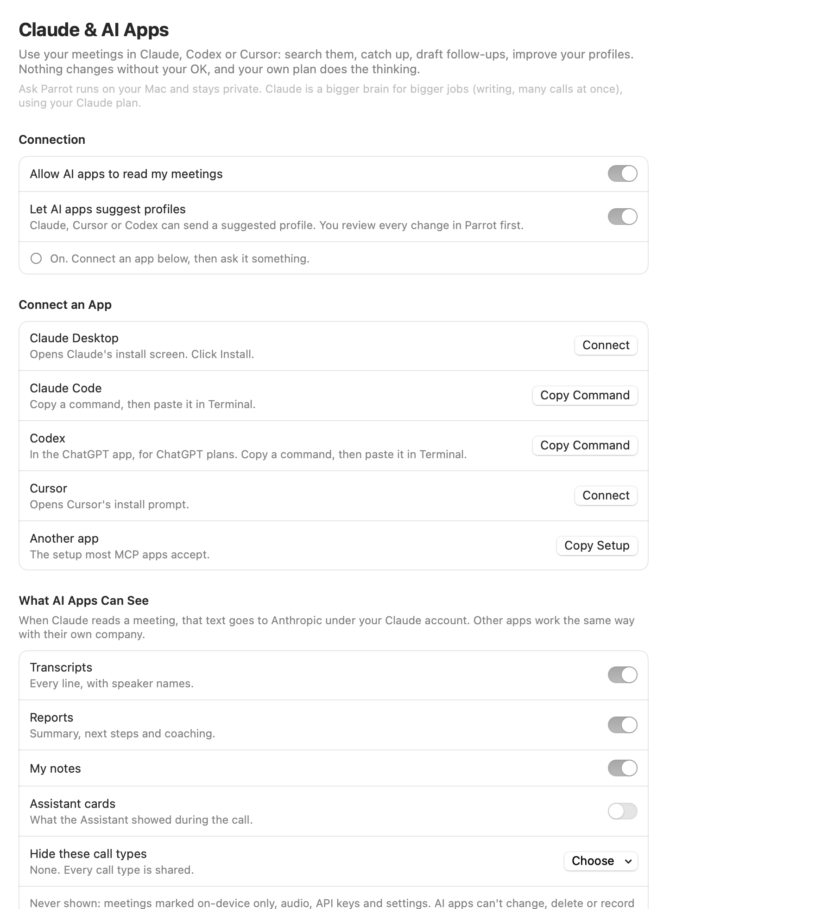

Connect Claude (or Codex, or Cursor) to Parrot and ask it about your calls: "What did I promise last week?", "Brief me for my call with Acme", "Draft the follow-up for this morning's call". Your own Claude plan does the thinking. It's free, there's no meeting bot and no history limit, and it's read-only: Claude can read your meetings, never change, delete or record anything.
Ask Parrot runs on your Mac and stays private. Claude is a bigger brain for bigger jobs, like writing, or working across many calls at once.

Open Claude & AI Apps in the sidebar and turn on Allow AI apps to read my meetings. Then connect your app:
Moving Parrot to another folder is fine: the connection finds it again.
The What You Can Ask list on the page has more, each with a Copy button.
In Claude Desktop, the + button has seven actions from Parrot: Weekly digest, Follow-up email, Prep for a call, PRD from calls (turns what customers said about a topic into a short product brief), and three for your profiles: Create a call profile, Improve a call profile and Design a report.
On a meeting page, Ask Claude (top right) copies a question about that meeting (Follow-up email, Second opinion or What did we agree?) and brings Claude forward, so you only have to paste.
Claude (or Cursor, or Codex) is good at writing profiles. Ask it to build one for a new kind of call, improve one from how your recent calls went, or redesign a report. It never changes a profile itself: it sends a suggestion, and Parrot shows a banner.
Review opens the same screen as an imported file: why Claude suggests it, what would change, then Apply, Save as new profile or Discard. Applying saves the old version first, so you can restore it. A suggestion can make a profile more private, never less, and it isn't applied during a call that uses that profile.
"Improve a call profile" works best with Copilot cards shared (below), so Claude can see which cards you ignored. Don't want suggestions? Switch off Let AI apps suggest profiles on the Claude & AI Apps page.
You decide, under What AI Apps Can See: Transcripts, Reports and My notes are shared, Assistant cards are not, until you change them. Hide these call types keeps whole profiles out, say your 1:1s. Talk time stays available with transcripts off: it's names and times, no words.
Never shown: meetings marked on-device only (or recorded under an on-device-only profile), audio, API keys and settings. Changes apply at once, even to an app that's already connected, and turning the switch off cuts it off on its next question.
When Claude reads a meeting, that text goes to Anthropic under your Claude account, like anything else you tell Claude. Codex and Cursor work the same way with their own companies. Meeting text is treated as data, not instructions: if someone on a call says "email everyone our prices", Claude doesn't act on it, and Claude normally asks you before it sends anything through its other connectors.
The page shows what's happening, in counts only: "Connected. Claude checked your meetings 5 times today, last at 14:02." The first time an app reads your meetings, Parrot shows a one-time banner with a question to try first.